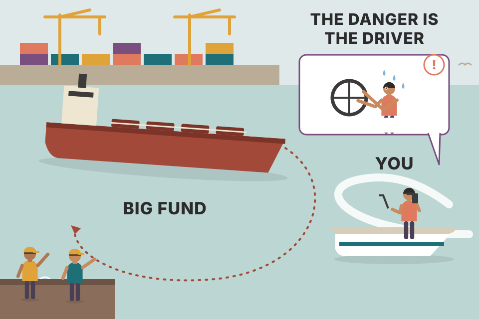
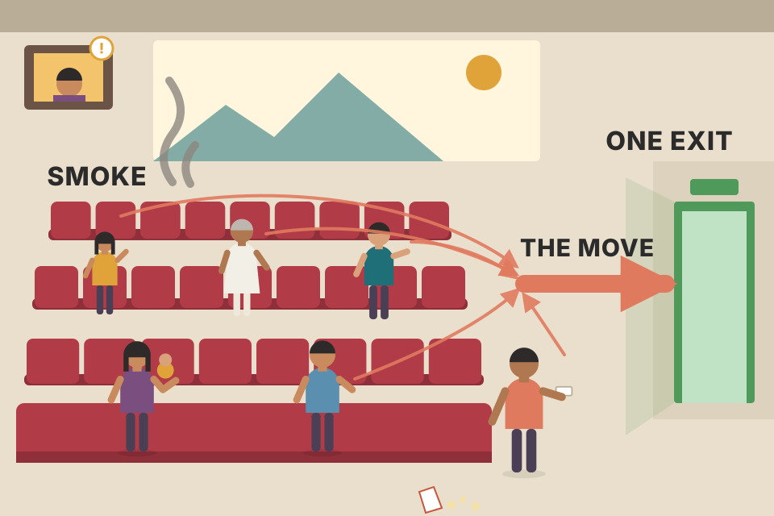
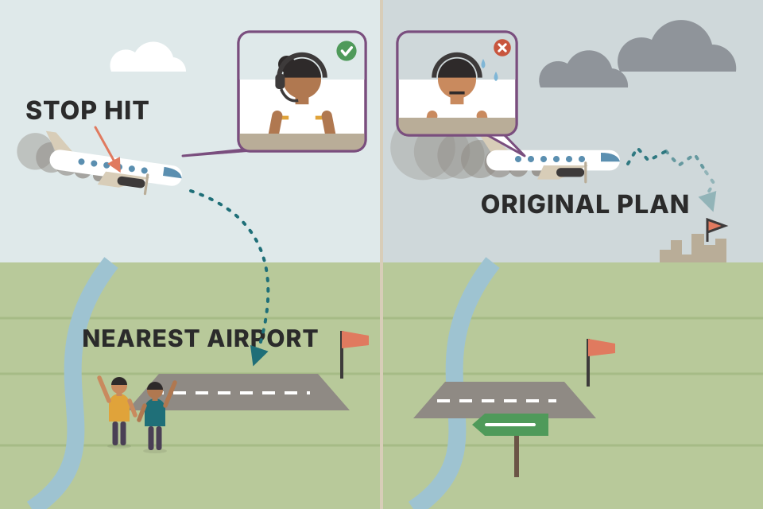
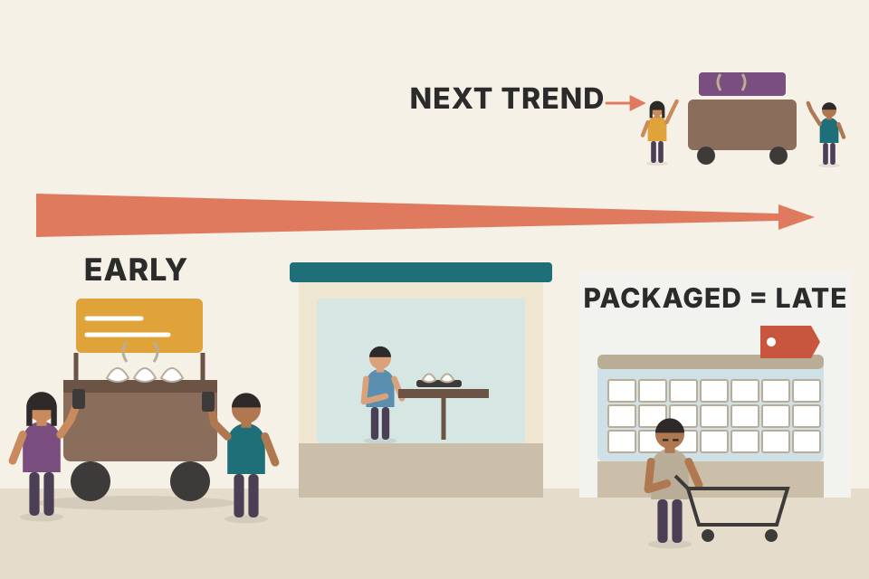

Carter's first chapter is not about indicators. It's about why most traders lose, how one ordinary loss turned into a $54,720 disaster, who made money on the other side, and the single economic rule underneath all of it: supply and demand, driven by people forced out of their positions. Every section of the chapter is here in the book's order, in plain words, with something you can poke at. The book's own figures (1.1–1.7) are blank in this PDF, so the TASR charts below are reconstructions built from the prices quoted in the text; every other chart runs on simulated data.
Carter builds one chain of cause and effect. Each box below is one or more sections of this page.
Part I of the book is called Trader's Boot Camp. Its promise: explain how the markets actually work, and the best ways to prepare yourself mentally before you trade or invest. Carter opens it with two sayings. A Spanish proverb is about a mouse that no longer wants the cheese, only a way out of the trap. Hermann Hesse's line is that we often think holding on makes us strong, when sometimes the strength is in letting go. Both are about the same thing this chapter is about: getting out of a losing position.
Boot camp before the battlefield. Part I is the drill: what the terrain is (how markets move) and what will break first under fire (your own head). Part II is where the actual setups start.
Carter starts with an advantage individual traders have over big funds. A fund trying to dump 200 million shares of Apple can't do it quietly; it takes days, weeks or even months, and if the fund shows its hand, other funds jump in front of its orders (front-running) and push the price against it. A small trader can get in or out of 1,000 AAPL shares or 10 E-mini S&P 500 futures instantly and nobody notices. Moving undetected is a huge edge. His blunt point about the game: money in markets is made by taking it from other traders. It's ruthless, not a meditation circle.
A common way big desks hide an order is to never be more than a small slice of each day's trading (the slider: "participation rate"). Days needed = order ÷ (participation × daily volume). The daily volume here is a hypothetical number, not Apple's. With 30 million shares a day and a 10% cap, 200 million shares takes about 67 trading days, roughly three months: Carter's "days, weeks, months". Your 1,000 shares is a few millionths of one day. Each block in the chart is one trading day.
So why do people come to trading? It's exciting and engaging, and there's money in it, but Carter's one-word answer is freedom. Most of life is being told what to do. Business owners who are millionaires still carry obligations and daily fires. He quotes Dan Sullivan, the 75-year-old owner of Strategic Coach, who sees retirement as an invitation for death to find you and says you need an interesting future to stay engaged. Staying home with the kids is, he says, the hardest job there is. Gig work (Uber, Upwork) gives freedom but pays poorly, so the hours pile up. Trading done right pays well for relatively little work.

A speedboat and an oil tanker in the same harbour. The tanker (a fund) needs miles to turn, and everyone can see it coming. The speedboat (you) can turn on a coin. The speedboat's danger isn't the sea; it's the driver.
trader_returns_reality.md shows a small edge multiplied by many trades turns negative once costs bite, and SEBI found 80% of intraday traders with more than 500 trades a year lost money (FY23).Carter is only half joking about trader "craziness". He cites a study from the University of St. Gallen (Switzerland) that reused an existing comparison of 24 psychopaths held in German high-security hospitals against a control group of 27 "normal" people. The control group turned out to be traders (stock, currency, commodity and derivatives traders), and the traders did worse than the psychopaths. The study described them as willing to cause great damage just to come out ahead of the neighbour. Textbook psychopath traits he lists: antisocial behaviour, poor judgment and failure to learn from experience, not seeing yourself as others see you, and unexplained impulsiveness. Sound like a trader fighting the market and not knowing why.
The freedom that attracts traders is also what ruins them. The market can't protect you from yourself. Fund managers mostly have supervisors; individual traders are unchecked and live one mouse click from disaster. Worse, the market soothes you, encourages you and actually rewards bad habits:
Each simulated trader takes 200 trades with no edge at all: one in three hits a +2R target, two in three hit the −1R stop (R = the amount you planned to risk). The "no stop" twin gets the same trades, but when the stop is hit it holds on. From there price wanders randomly until it either recovers to the +2R target or reaches the trader's pain point, −L R. For a random walk, the chance of being rescued is exactly (L − 1) ÷ (L + 2) (the gambler's-ruin result). With L = 20 that's 86%: the market rewards stop-removal most of the time. But the average outcome of a removed stop is still −1R, exactly what the stop would have cost. You swap a certain small loss for frequent wins plus rare huge ones, and the huge ones compound against you. That's Carter's "999 times" made precise, and why the drawdown readout is so much worse.
Crossing a road without looking. It works almost every time, so the habit feels safe. The single time it fails isn't a small cost you can average away.
trading_equations.md §4 (max drawdown): a 50% drawdown needs +100% to recover. One −20R hit at 1% risk is roughly a 20% hole that needs +25%.Used-car salespeople have a bad name, but they can't match a trader in a position, who will believe anything that keeps him "not wrong". In a job you can blame the delivery people. In trading there's nobody to blame but you, and people hate admitting they're wrong.
Blames the spike on hedge funds hunting stops and predicts a big rally as soon as they're finished. He doesn't exit. The loss grows.
Has a profit, but assures her cat that the action is great, the news on CNBC is bullish, and there's lots more upside. She doesn't exit. The winner becomes a loser.
Both are unaware that the market trains a loser's reflexes into them, and unaware of what really moves markets. The result is a trader who takes tiny wins and enormous losses, which no account survives. Trading is far more about admitting you're wrong, again and again, and being fine with it, than about making a lot of money. Professionals know this and run algorithms that prey on traders who haven't figured it out. One trader's disaster is another's bread and butter.
| # | Carter's four reasons traders lose | In plain words |
|---|---|---|
| 1 | People attracted to trading share traits with psychopaths | impulsive, don't learn from experience, can't see themselves clearly (section 03) |
| 2 | The freedom is destructive | we spent our first 18 years learning to follow rules; now there are none |
| 3 | Markets encourage and reinforce bad habits | the removed stop that worked (section 03) |
| 4 | Traders take every chance to sell themselves on being right | Joe and Joanne above |
Carter's prescription: there is always someone on the other side of your trade, so be that trader. Instead of chasing, know that others chase; instead of pulling your stops, know that others pull theirs. Size right for the account, or smaller. Be content to wait for the one setup in your plan, even if that means no trade today. Small and consistent beats large and haphazard; aim to make money over time, not to be right right now.
trader_returns_reality.md says short-term trading is zero-sum before costs and negative-sum after, and that in SEBI's FY24 data prop firms and foreign investors made large F&O profits, 96–97% of it from algorithmic trading, while individuals lost over ₹61,000 crore. That's Carter's "pros run algos that prey on them", in Indian numbers (not in the book).The problem has two parts. First: traders know not every trade works, yet right after placing each one they feel this one will. Carter cites two Canadian psychologists who found that people at the racetrack were much more confident about their horse just after placing a bet than just before. Nothing about the horse changed; only the ticket did.
Why: a strong social pull to look consistent with our choices. After deciding, we respond to inner and outer pressure in ways that justify the decision. If the choice was good, that's helpful. If it was bad (a trade, a job, a partner, a deal), the same process makes it much worse, because we dig in to defend it and refuse to move on. People can spend a lifetime justifying a bad choice, trying to make it work and look right, and stop being true to themselves. That shows up as frustration that pops up for no obvious reason (snapping at your mom for telling you to eat vegetables: you're not angry at her, you're angry at yourself), and it will show up in your trading.
Carter suggests testing this in your personal life first; it's cheaper than your trading account. Watch what annoys you and what sets you off. His own story: around 2005 he worked on the website with Rosa, his sister-in-law (he has known her since she was seven). He kept calmly proving he was right, the working relationship soured, and she left. Friends (Michael Palmieri and Tom Tuohy, whom he'd seen become happier and more effective) told him the real issue was his need to always look like he knew what he was doing, and pointed him to a workshop called the Landmark Forum. He thought it looked like a cult, then saw it on a top-10 list of weekend adventures and went, sceptical.
The racetrack study is usually cited as Knox & Inkster (1968), "Postdecision dissonance at post time", in the Journal of Personality and Social Psychology; Carter doesn't name it. The mechanism is cognitive dissonance: holding "I chose this" and "this is failing" at the same time is uncomfortable, and the cheapest fix is to change the second belief, not the position. That's why your stop has to be decided before the trade, when there's no ticket to defend.
Second: many traders think they can trust their judgment during a trade. Before the trade you are as objective as you'll ever be. Once it's on, objectivity drops immediately, and it drops in proportion to the position size relative to the account. Carter's example: one trader is long 10 E-mini S&P 500 futures in a $10,000 account (using day-trading margin); another is long 1 E-mini in a $100,000 account. Guess who is sweating every tick. The first already has the "this will work" feeling and now also watches huge percentage swings in equity on every tick. Carter compares judging a trade in that state to rowing upstream with Swiss cheese for an oar. And staring harder at the screen has, he says, zero correlation with what the market does next.
One E-mini S&P 500 point is worth $50 and the minimum tick is 0.25 point = $12.50 (CME contract specs; Carter doesn't give them). Trader A: 10 contracts × $12.50 = $125 per tick = 1.25% of $10,000. A routine 10-point wiggle is $5,000, half the account. Trader B: 1 contract = $12.50 per tick = 0.0125% of $100,000. A's account swings 100 times harder for the same market move. Nothing about the market differs; only the stress, and with it the quality of every decision.
intraday_swing_playbook.md sizing rule: risk 0.25–0.5% of capital per intraday trade, quantity = (capital × risk%) ÷ (entry − stop). It is the antidote to Trader A: size comes from the stop and the account, not from how sure you feel.Together these two problems create a vicious cycle: traders keep selling themselves a faulty set of beliefs. Instead of following an exit plan they spend their time justifying why they're right, and in the end they close the position for only one of two reasons:
Neither involves a plan, thought or objectivity: just a batch of forced sell orders (or forced buys, for shorts covering). This capitulation, exiting because you have to, not because you want to, is emotional trading at its purest, and it creates the best swings to trade. Whether it's a months-long slide from continuous capitulation or a 10-minute rally from shorts forced to cover, these acts drive the major moves in every market and every time frame. Markets move not by choice but under compulsion: somebody has to buy or sell.
The pressure to stay consistent with your first choice, plus trading far too big, causes more disasters than anything else. But on the other side of disaster is opportunity: for every 20 traders blowing up, another trader is on the other side. The money doesn't disappear; it flows into an account that uses setups built around human nature. One person's panic margin call is someone else's profit target. Don't let the market seduce you into needing to be right.
Buy a stock with leverage L (equity E, position L·E, the rest borrowed). After a fall d, equity = L·E·(1 − d) − (L − 1)·E. The broker calls when equity ÷ position value drops under the maintenance level m: that happens at a fall of d* = (1 − m·L) ÷ (L·(1 − m)). At 2× and 25% (the usual US minimum for stocks), d* = 33%. TASR fell about 58% in eight sessions, so anyone who bought near the top with 2× leverage got the call partway down and was sold at the market. Every one of those orders is the "forced supply" of section 15.

A crowded cinema with one exit. Nobody plans to run, but when the smoke appears, people don't choose a price for their seat; they just leave. The rush through the door is the move.
order_flow.md: market orders are the aggressive side that moves price, and a trapped buyer's stop-loss adds to the selling when a low breaks. Capitulation is that, at scale.Carter kept this example from earlier editions because it applies just as well to today's volatile names (he mentions Netflix and Tesla); he expanded the text. Figure 1.1 shows a heavily traded stock, name hidden at first. Through 2004 one side bought it hard and the other shorted it hard, and both had chances to profit. On December 29, 2004 it made a new 52-week high and hit $33.45 the next trading day. Over the next five sessions it pulled back to support at $27.62 (his point 3), a solid-looking buy that repeated an earlier buying opportunity (point 1) with the same oversold stochastic reading (point 2).
It's an inflection point: breakout buyers are in pain, short-sellers at the highs are euphoric, people long from $10 wonder whether to add, and people who are flat are anxious not to miss the next leg. Carter asks you to decide before reading on: buy or short? How much would you risk? You need those answers before the trade, not during it.
Reconstruction: the dated prices in the text are pinned exactly ($33.45, $27.62, $27.80, $23.78, $17.01, $14.02, $14.04, $20.83 …). Every other bar, the volume and the chart before December are invented to fit the story. Not real TASR data.
Step through the days. The readout keeps two numbers: what Joe has realised and what his account is actually worth today. Carter's point at the end of the story is that these are the same number.
The book doesn't say which high and low gave its $22.79 "50% retracement", so it isn't drawn here.

A pilot whose engine fails is trained to land at the nearest airport, not the one he planned. Joe's engine (his stop) failed through no fault of his own on Jan 7. Everything after that was him flying on to his original destination.
Joe's protective order was a stop-limit at $26.20: when price trades at $26.20 or lower, place a limit order to sell at $26.20 (or better). On Jan 7 the stock opened at $23.78, below the limit, so the order sat there unfilled, waiting for a rally back to $26.20 that never came. A stop-market order at $26.20 would have become a market order at the open and sold around $23.78: a bigger loss than planned, but the end of the problem. Later, on his short, Joe switched to a stop-market, which is why it filled at $20.83 on the gap up.
Carter's verdict. Joe didn't have a bad plan: a credible entry method, a low-risk entry point, a great reward-to-risk ratio, only about 3% of the account at risk, and no margin call (unlike many traders in the same stock). The gap through his stop wasn't his fault and could happen to anyone. What derailed him was a small shift: once the gap happened he stopped thinking about risk and thought only about the gain, meaning how much of the loss he could win back. That blinded him to the possibility of ruin. The survivor's mantra is to live to fight another day. The rule: when the price gaps through your stop and you hold a stop-limit, accept it and get out at the market immediately.
A mentor's advice to Carter, who wanted to wait for a scratch: "An unrealized loss and a realized loss are the same damn thing." Manage trades by your account balance.
3,000 simulated long trades: entry at 100, stop 6% below (−1R), target 3R above, daily random moves of 2.5%, plus overnight gaps of 8–30% (half up, half down) on the chosen share of days. Stop-market: sells at the stop, or at the open if the open is already below it. Stop-limit, held: if the open gaps below the limit, the order waits; it fills only if a later day trades back up to the limit. Meanwhile the holder behaves like Joe: hangs on until the loss reaches the give-up level, then sells at the market. Same price paths for both. Results are in R and are a model, not market evidence.
What it shows, honestly: on a random walk, waiting after a gap does not change the average; prices are as likely to bounce as to keep falling, so some limit-holders get rescued at −1R (the tall −1R bar) while the market order books every gap loss. What waiting changes is the extreme tail: the worst outcomes run to the give-up level instead of stopping at the gap. Carter's rule is about that tail, the one trade that ruins the account. And real breakdowns like TASR are worse than a random walk: forced sellers keep arriving (sections 07, 15), which a random walk doesn't model.
After a loss of fraction x you need a gain of x ÷ (1 − x) to get back. Joe's account fell 54.72% to $45,280; 0.5472 ÷ 0.4528 ≈ 1.21, the book's 121%. The curve is why Carter cares about risk first: losses and the gains needed to undo them are not symmetric.
trading_equations.md §4: gain to recover = 1 ÷ (1 − MDD) − 1, the same formula (yours, not Carter's).Maria Carter writes for the partners of traders (she suggests traders share this chapter with them). She and John have been married 20 years and together 25, and she can map her life onto his trading experience. For years she felt she deserved a medal for standing by him through the rough patches; now she sees that sticking through them built the life and freedom they have.
Every trader has bad trades and usually one or two really bad losses. If your partner is on a steady losing streak, ignoring it is unrealistic and irresponsible. Check whether they're still trading for the right reasons:
You have to love it. If trading is meant to get you out of debt or give a quick cash fix, you'll get burned. John was hooked on markets when she met him (she was 19, in college); he had her invest some financial-aid money in a stock called Iomega. Warning signs: dreading the trading day, becoming secretive, gut or health nagging. Some people simply shouldn't trade; it doesn't fit their personality or the life they want.
Emotional management is critical, so a trader needs outlets: for John, time with the kids, working out and running, travel, business networking groups that aren't all traders, and his wife. Take days off and vacations like any career. Sometimes the non-trader must pull the trader off the monitor; she calls the hunched, key-stroking state "the Gollum". Every successful pro she's met keeps a bigger-picture vision that keeps trading in check.
Her lesson from years of blow-up stories: the plan is what makes a trader good. Everyone deviates sometimes; with no plan you're toast. John has boxes of trading journals recording his plans and his emotional state when they worked or didn't, so he can reset course, avoid repeats, and find the niche that fits him. A losing day doesn't worry her; not seeing him write in the journal does.
If the trader keeps to the three Ps, the "beast" matures. She describes John's evolution in three stages (click above).
Trading largely comes down to taking and managing risk. John took his big risks and hits early, when only money was at stake: in her twenties she could live on ramen noodles for a couple of weeks and wait on a first home. With three children, a job that barely pays the rent and heavy debt, the stakes are far higher. If your trading eats into your life and the lives around you, without honesty about passion, perspective and plan, it won't be pretty. If partners have very different values about lifestyle, money and timing, look hard at that first. Trading can be a great life, but decide whether it's the right path, at the right time, decide how much risk you'll take, and manage a plan around it.
John didn't know Maria had been paying such close attention. Being a team doesn't mean trading together: Maria has no interest in trading (he has none in fabric colours), and the balance works, alongside shared interests in travel, reading, exploring, children and life philosophy. He learned early to just tell her when he'd had a truly bad day (not a normal loss, but something out of control, like a big gap against an options position) so she'd know he wasn't upset with her, just retreating to regroup. Her blog is www.thisonelife.com.
A pilot's family doesn't need to know how to fly, but they learn not to call during take-off and landing, and they notice when the pilot stops doing the pre-flight checklist. The journal is the checklist.
trader_returns_reality.md suggests paper trading 3–6 months (or ≥ 100 trades) and keeping a simple journal of each signal, entry, stop, exit and costs.The idea that clicked for Carter at "intermediate" level: whenever a trade went horribly wrong for him, someone else was happily taking that money. Was there a setup he had missed? Figure 1.6 shows TASR from that side. Carter's reading: this pattern appears when large funds want out of a stock. They push it to new highs, which pulls in the retail crowd, and then start unloading. They know retail will buy the new highs and will keep buying all the way down to support, which gives the institutions plenty of time to sell. The stock is made to look great when it isn't. Carter's name for it is the "fake orgasm": plenty of noise, nothing real behind it.
He uses it as a fade for swing trades on stocks. To fade a market is to trade against the move: if a stock rallies into this setup, he looks to short it.
Three things should line up at the new high. Price makes a higher high. Momentum (RSI, which measures the power of the move) makes a lower high: a bearish divergence, the stock is losing power. Volume shrinks: on TASR, the new high came on one-fourth of the volume of the last thrust (Carter's "car running out of gas": no sustained move without volume). Each says the same thing: fewer buyers are paying up, so the new high isn't backed by demand.
Carter gives only the period, 7. Standard Wilder RSI: average gain ÷ average loss over the last n closes (each average smoothed as avg = (prev × (n−1) + today) ÷ n), RSI = 100 − 100 ÷ (1 + that ratio). On the reconstruction the computed values differ from the book's (it reports 72.35 at the Dec 30 high, below the Nov 15 reading); the shape, a lower RSI high at a higher price high, is what matters.
Carter's rules, for individual stocks. They're written for sells/shorts; for buys, reverse everything.
Joanne's trade. After her entry, TASR never closed above the previous day's high, so the daily exit never fired. When it broke key support on the daily chart (the key uptrend line), the selling turned ugly, and she switched to the 60-minute chart. Figure 1.7 is that 60-minute chart: volume jumps once support breaks (point 1). Through the three big sell-off days (points 2, 3, 4) no 60-minute bar closed above the high of the lowest bar so far. The next day (point 5) a bar closed above the previous bar, which was the low bar of the whole move: her signal. She covered at the next bar's open at $16.17 (+$28,200), and reversed: long 4,000 shares at the same price, stop under the low of the move. She held until a 60-minute close below the low of the highest bar, which came the next day (point 6), and sold at $20.54 (+$17,480). Total $45,680; while Joe sat in his first marriage-counselling session, she wired part of it out for a week in Maui.
On the 60-minute reconstruction, the engine on this page applies the exact rule (close above the high of the lowest bar since the support break → exit at the next bar's open; for the long, close below the low of the highest bar since entry → exit next open) and lands on the book's two fills. That fill convention for the long exit is my assumption (the book just gives $20.54), and so are the trendline's placement and its break on the Jan 7 gap; the book shows neither, since its figures are blank in this PDF.
"High of the low bar" is a ratchet. As price falls, the ratchet follows the lowest bar down and keeps its high as your line in the sand. Price has to do something it hasn't done all move, close above a bar's high near the bottom, before you leave. Small bounces inside the fall don't count.
Each run makes 1,000 random-walk stocks (1,000 days each; volume random and unrelated to future price), then applies the rules mechanically: a new 252-day high; the previous 252-day high at least 10 days earlier; a lower 7-period RSI than at that previous high; volume at most half of that day's; a close back below the previous high within 10 days → short next open; stop-market 0.75% above the highest high (about Carter's 25 cents on $33); exit on a close above the high of the lowest day since entry; 60-day cap. The key-support / 60-minute switch is left out. On markets with no crowd in them the average comes out near zero minus costs, as it must. That's the honest lesson: the chart geometry is not the edge. If the setup works on real stocks, the edge has to come from the behaviour Carter describes (funds distributing, retail chasing, margin calls). To find out, run it on real NSE data with out-of-sample rules; this page can't settle it.
backtest_results_summary.md: the daily breakout made 13–18%/yr but no better than holding the same stocks. A test of the opposite trade, fading failed 52-week highs with these rules, would be a natural next project.When a trader loses money it doesn't disappear into a black hole; it lands in someone else's account. Carter says this was true even in the 2008 crisis: what AIG lost was a trading gain on Goldman Sachs's books, and when AIG couldn't pay, the government lent it taxpayer money so it could pay Goldman.
Joe and Joanne are Carter's illustration, not literal counterparties; the totals differ because thousands of other people traded TASR in between. The point is structural: every share Joe sold in a panic was bought by someone, and every forced cover was sold by someone. A setup that systematically stands on the other side of forced, emotional orders is collecting what the forced side gives up.
trader_returns_reality.md: SEBI found 93% of individual F&O traders lost money over FY22–24 (average about ₹2 lakh each) and 87.7% lost in FY26. Short-term trading is zero-sum before costs; brokers, exchanges and the government take a cut of every trade on top.TASR didn't drop 60% in eight sessions because it wanted to. The main victims were desperate traders and mutual funds that had loaded up on the stock to sell covered calls against it. Covered-call writing was one of the most reliable income methods for most of 2004, because the market was choppy and going nowhere. It worked so well that Wall Street announced plans for a couple of mutual funds specialising in covered calls.
Carter's "almost guarantee": as soon as Wall Street launches a special vehicle for a market or strategy, that strategy is either near the end of its useful life or set up for a bubble-type collapse. Once the covered-call funds got going, the market roared higher in the last two months of 2004, and covered calls stopped being the best way to play conditions. Second example: when Wall Street's push to sell home-loan-backed CMOs (collateralized mortgage obligations) turned into subprime lending to feed demand, it was a clear sign the housing market was about to collapse. When Wall Street gift-wraps something and sells it to the public, the move is close to finished.
A covered call is "own the stock, sell someone the right to buy it from you at the strike". You collect the premium, which pays best when the stock goes nowhere: Carter's choppy 2004. In a strong rally your gain is capped at strike − cost + premium, so the strategy falls behind just owning the stock. In a crash you still own all the shares; the premium cushions only a few points. A fund full of TASR plus covered calls was mainly long TASR, so it was a natural forced seller on the way down.

By the time a restaurant trend is turned into a supermarket ready-meal, the trendy diners have moved on. Packaging is the last stage of a trend, not the first.
TASR lost 60% because many people were stuck long like Joe and froze. Many never decided to sell: they held until they couldn't stand it, or their broker sold them out on margin calls. The margin calls caused the worst of the selling, when TASR closed near $14. Those forced market orders rippled through the stock and gave even worse fills to people like Joe who were trying to finesse their way out. The victims walked away red-faced; another group took the other side of this "capitulation trade" and made great profits.
To get on the winning side you first need to know how markets really work, and why traders sabotage themselves. The first part is easy: markets rise day to day because current demand exceeds current supply. It has nothing to do with secular bear or cyclical bull labels, high P/E ratios, or which necklace CNBC's Maria Bartiromo wore (in the dot-com bubble some traders really did look for a rally when she wore pearls). It's about what traders will pay for a stock today.
Price starts at $30.00. Below it, every 10-cent level holds the same number of resting buy orders (bids). Waiting sell-stops and margin-call triggers sit in clusters under obvious levels ($29.50, $29.00, $28.00, a 40/35/25 split of the total). A market sell eats the bids level by level; each time price trades through a cluster, those stops turn into new market sells and join the queue. Step through it: with no stops, 300k shares moves price six levels ($0.60); with the default 600k of waiting stops the same first order runs to $28.50, five times as far, and more stops push it further. With Carter's numbers (1.5 million offered, 50,000 bid per level) the first order alone eats 30 levels, $3.00, before any stop fires. Buying, by contrast, mostly arrives as people choose to pay up, one decision at a time: the stairs.
Dominoes. The first market sell knocks over a row of bids, which knocks over a stop, which becomes another market sell, which knocks over the next row. The first push is small; the stops are the energy stored in the line.
order_flow.md: sweeps (one order lifting several price levels at once) signal urgency such as stop-losses; absorption (heavy selling that doesn't move price because a large passive buyer soaks it up) is the opposite case, where the model above would need much deeper bids.Trading long or short is easy once you ignore your own opinions, stop trying to be right and stop trying to make money; that's the hard part. It means dropping every prejudice about the market and focusing only on the current supply-and-demand picture. Carter's image: in the dance with the market, the market leads and you follow. Next, work on your own mental outlook and how you process information, and understand how the brain naturally pushes traders into losing: either one whopper like Joe's, or a series of small bad trades that grind the account down, death by a thousand cuts. Either way, the brain allows it. It is wired to sabotage your trading, and, ironically, it does so because it thinks it's protecting you. Understanding that is an edge, and it's the subject of the next chapter.
Carter closes with three sayings, paraphrased: the polo player Tommy Hitchcock: treat a loss lightly and a win as routine; Abraham Lincoln on letting an elephant run when you've grabbed its hind legs; and Alan Watts: our suffering comes from treating a game far too seriously.
The chart shows two simulated accounts ending at the same place: one falls off a cliff in a single trade, the other leaks through many small losses. Different feel, same brain behind both.
Traders share psychopath-like traits; freedom with no rules is destructive; the market reinforces bad habits; traders keep selling themselves on being right (section 04).
It was a stop-limit: once triggered, it could only sell at $26.20 or better, and price never traded back up there. A stop-market would have sold at the open, near $23.78 (section 09).
After the gap he switched from managing risk to chasing the gain (winning back the loss), so he didn't take the immediate market exit the rule calls for (section 09).
100,000 ÷ 45,280 = 2.208, so he needs +120.8%. Equivalently a 54.72% loss needs 0.5472 ÷ 0.4528 ≈ 1.21 (section 09).
100×: ten times the contracts on one-tenth the capital. With $12.50 per tick (contract spec, not in the book), A moves 1.25% per tick, B 0.0125% (section 06).
The pain ("uncle") point and the margin call. Both send market orders with no plan, and together they are capitulation, which creates the big swings (section 07).
New 52-week high; bearish divergence on a 7-period RSI; significant drop in volume; short the day after a close back below the previous 52-week high; stop-market just above the high; exit on a close above the high of the low day (or of the low 60-minute bar once key support breaks); don't trail stops (section 12).
Her daily rule applies while price is above key support. Once TASR broke the key uptrend line, the rule says stay in until a 60-minute close above the high of the low hour (section 12).
For a random walk the average outcome of the held loser is still −1R, so nothing is gained on average, and the 14% that run to −20R compound into deep drawdowns. The frequent rescues are what train the habit (section 03).
No. Random walks contain no forced sellers or distributing funds, so no chart rule can have an edge there. It shows the edge, if any, must come from crowd behaviour; only a test on real data can check that (section 12).
Buying mostly arrives as voluntary decisions spread over time; selling can arrive all at once as margin calls, stop cascades and capitulation, i.e. sudden supply far larger than bids (section 15).
The strategy is near the end of its effectiveness or set up for a bubble-type collapse (covered-call funds in late 2004; CMOs and subprime) (section 14).
Only your confidence (racetrack study). Decide exits and size before entering, while you're still objective (sections 05–06).